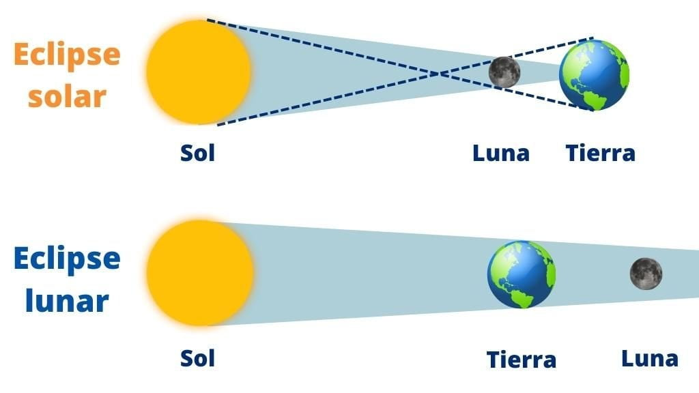

Es decir, el Eclipse Lunar ocurre cuando la tierra está entre el sol y la luna. Y ese fenómeno hace que la luna pierda la iluminación. Se oscurece.
Mientras, el Eclipse Solar se produce cuando la luna se interpone entre la tierra y el sol. Por ende, los rayos no llegan a la tierra, donde se genera una sombra. El fenómeno ocurre cuando hay luz y la luna está en fase nueva.
